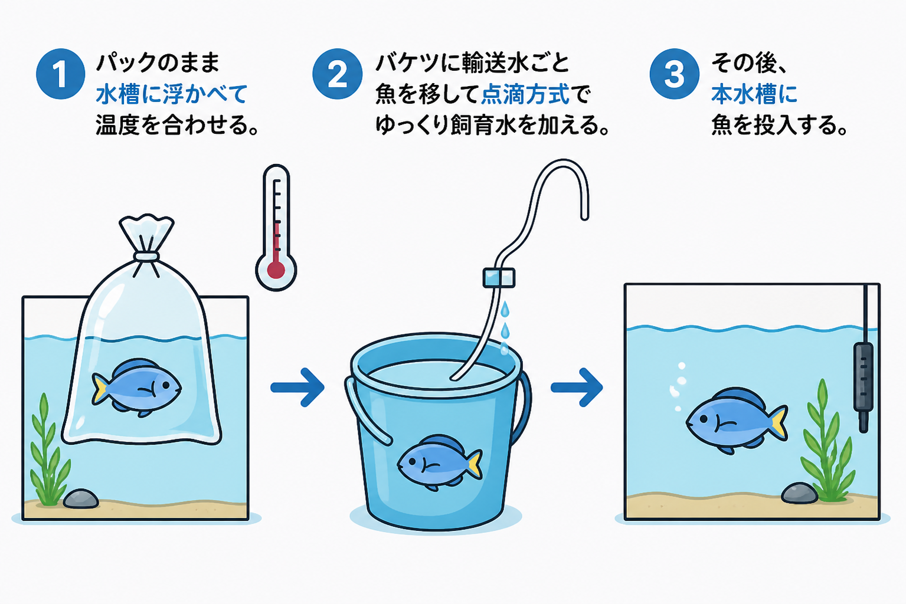

【海水魚の生理】第１回：
海水魚の水合わせ ―その方法、本当に大丈夫？
Published: 2026.03.30
新しい海水魚をお迎えするのは心躍るひとときです。
ワクワクドキドキするような
皆さんきっと同じように、その子とのアクアライフを想像して
期待と不安が入り混じったような気持ちになる瞬間でもありますね。
そして、海水魚をお迎えして、本水槽に投入する際に
まず皆さん「水合わせ」と呼ばれる作業をされているかと思います。
今日はその水合わせについてのお話です。
多くの飼育本やネット情報・SNS、そしてYouTubeなどで紹介されるのは、こんな手順です：

――こんな流れではないでしょうか。
そもそも水合わせとは何のために行うのでしょうか？
おそらく多くの方が「急激な環境水の変化が魚に負担をかけるから」と答えられるでしょう。
では？
環境水の何が急激に変化したらどんな負担が魚にかかるのでしょうか？
そして、上記の方法で本当に魚に負担はかからないのでしょうか？
時と場合によっては、“水槽プカ＆点滴式水合わせ”は、
実は“丁寧”ではなく“雑”な水合わせになって、魚に負担をかけていることがあるのをご存じでしょうか？
今回はその辺りを切り口に、「海水魚の水合わせ」という行為をもう少し掘り下げてみたいと思います。
１．環境水の急変で何が魚に負担をかけるのか？
ショップでは元気に餌を食べていたのに、自宅の水槽に入れたら食べなくなった。
朝起きて覗いたら、亡くなっていた――。
「丁寧に水合わせしたのに、どうして？」
そんな投稿をSNSでよく見かけます。
もちろん他の原因もあるでしょう。
しかし中には「水合わせの失敗」が関係しているケースもあると、私は考えています。
飼育水の急変が魚に負担をかけるのは明らかですが、
では、何がどのように急激に変化すると、海水魚の体内では何が起こるのでしょうか？
そこを理解できれば、一般的に紹介されている“水槽プカ＆点滴式水合わせ”が有効な場合と、そうでない場合の違いが見えてきます。
魚類は、体外の環境水が変化すると体内ではさまざまな調整反応が起こります。
そのメカニズムを少し詳しく見ていきましょう。
生物には、外部環境が変化しても体内の状態を一定に保つ働きがあります。
これは「恒常性（ホメオスタシス）」と呼ばれ、自律神経系や内分泌系（ホルモン）などの自動制御システムがその維持を支えています。
もちろん魚類にもこの機構は備わっています。
しかし、外部環境水が急激に変化した場合――
水中で生活する魚類ではこの補正機能が追いつかず、さまざまな生理的ストレスが発生します。
① 温度ショック
変温動物である魚は、水温と体温がほぼ一致するという性質を持っています。ですので水温変化は代謝速度そのものの変化を意味します。
酵素反応速度・酸素消費量・アンモニア排出量、すべてが温度に比例して動くため、水温がわずか数℃違うだけでも、体内の生理時計が一斉にズレるリスクがあります（Alfonso et al., 2021）。
特に急激な変化は、魚が本来もつ自律的な補正機構を超えてしまい、代謝や浸透圧のバランスを一時的に崩すことがあります。
これがいわゆる温度ショックです。
ヒントは海水魚水槽の水温設定についてでも触れています。
② 比重ショック
塩分濃度の高い海で生活する海水魚は、体内の塩分濃度（約1.008）を外部環境と比較しながら、
エラ・塩類細胞を総動員してNa⁺/Cl⁻排出や水分吸収を調整しています。（Evans et al., 2013）。すなわち「浸透圧調整」をしてるわけです。
詳しくは【海水魚の生理】第４回：海水魚の浸透圧調整についてをご覧ください。
外部環境の塩分濃度が数PSU変化するだけでも、塩類細胞やNa⁺/K⁺-ATPaseの活性調整が起き、完全な適応には時間を要することが知られています（Varsamos et al., 2005）。
この「比重ショック」は「浸透圧ショック」とも呼ばれ、ホメオスタシスの崩壊リスクを伴う危険性があります（Evans et al., 2013）。
③ pHショック
外部環境のpH が大きく変化した場合（おおよそ 0.5〜1 ユニット以上）、 魚は血液や体液の酸塩基平衡を維持するために、鰓からの H⁺ 排出や HCO₃⁻ の取り込みを調整します。
しかしその補正には時間を要し、変化が急すぎると一時的に血液 pH が酸性またはアルカリ性に傾きます。
その結果、酸素運搬能力や酵素活性が低下します（Ishimatsu et al., 2004; Heuer & Grosell, 2014）。
多くの代謝酵素には至適 pH があり、特に鰓や腎臓で働く Na⁺/K⁺-ATPase などのイオンポンプ活性は低下します。 これにより浸透圧調整が遅れ、鰓上皮の透過性が上昇してイオン漏出が起こりやすくなります。 この状態が続くと、酸塩基平衡が破綻し、ショック症状に至るリスクがあります。
ちょっと小難しいことを書きましたが
「水温・塩分濃度・pH」などの変化もゆっくり時間をかければ
魚たちは補正し適応する力も持っていますので
要は「水温・塩分濃度・pH」この３つのポイントをしっかり押さえ
急変を避けてあげれば良いわけです。
それこそが「海水魚の水合わせ」の本来の意義になります。
２．正しい判断は「測る」ことから始まる
理屈がわかったところで、次に大事なのは“どう見極めるか”ですね。
つまり、感覚ではなく数字で判断すること。
ここからはその“具体的なやり方”を見ていきましょう。
まず最初に大切なのは――
輸送水（魚がパッキングされている袋の中の水）の数値を必ず確認すること。
持ち帰ったら（通販なら届いたら）、まずはこの３つを測りましょう。
① 輸送水の水温
② 輸送水の塩分濃度（比重）
③ 輸送水のpH
そして、その値と自分の水槽の飼育水にどれくらい差があるのかを確認します。
これを“当たり前の習慣”にしてしまいましょう。
何度か経験してみると、ショップや輸送条件によって
「水温も比重もかなりバラバラ」であることに気づくと思います。
一方で、pHはショックを起こすほど極端に違うことは多くありませんが――
これも、実際に測ってみないと分からない部分です。
それでは次に、前述した従来の方法（水合わせ）を行っても問題ないケースの目安を、具体的な数値で挙げてみます。
① 水温差：1℃以内
② 比重差：1メモリ以内（0.001）
③ pH差：0.4以内
「え？そんなに狭いの？？」と思われるかもしれません。
しかし魚が安全に耐えられる変化は、せいぜい
水温は1日に最大2℃程度（上がるより急に下がるほうが負担が大きい）、
比重は1日に最大2メモリ程度（下がるより急に上がるほうが負担が大きい）、
pHも1日に最大0.5以内に収めたほうが良いと考えます。
これもあくまで“24時間くらいかけてゆっくり変化させた場合”の目安です。
水槽に袋をプカ～と浮かべて温度合わせをする一般的な方法では、数十分で完了してしまいます。
もし水温の差が2℃以上あるなら、それは魚にとって十分“急激な変化”です。
同様に、点滴での比重・pH合わせも、輸送水と飼育水の差が大きいほど、
点滴方式では魚にとっては「急変」になります――この点は肝に銘じておきましょう。
例えば、輸送水の比重が 1.019・水温が 28℃で届いたとします。
（この数値は、実際かなり“あるある”です）
あなたの水槽が 比重 1.026・水温 23℃ なら、
比重は 7メモリ、水温は 5℃ も差があることになります。
この状態で“水槽プカ〜＆点滴式水合わせ”をやったらどうなるでしょう？
前述した魚の体内の調整機能が追い付かず、魚のホメオスタシス（恒常性）が「おいおい待てや…」と悲鳴を上げても不思議じゃないレベルの負荷になります。
新しい魚を迎えるときって、どうしても「早く泳ぐ姿を見たい！」って気持ちになりますよね。
でも、ほんの少しの手間が、その魚の命を左右することがあります。
水槽に入れる前に、まず“数字を知る”。
これが、水合わせを感覚ではなく、再現性のある行為に変える第一歩です。
私の場合――
新魚を迎えたときは、本水槽にすぐに入れずに必ず 8日間の検疫トリートメント期間 を設けています。目的は本水槽に新たな病原体の侵入を極力防ぐためです。
（あくまで参考として読んでください）
袋の中の水温と比重を測り、それとまったく同じ条件で バケツに新しい海水を作ります（本水槽の飼育水を使うこともあります）。
エアレーションを行い、その水に魚を移します。
ショップの輸送水は基本的に入れません。
私の経験では、水温と比重を合わせておけば、pHショックを起こすようなｐH差が生じたことがありません。
これは、海水自体に強いバッファー作用がある事に加え、輸送パックに純酸素が封入されているためだと思います。
それ以降は、1日に水温1℃以内・比重1メモリ以内のペースで、ゆっくり本水槽の飼育水に近づけていきます。
この方法を取るようになってからは、導入後にショック症状を起こす魚はほとんど見られなくなりました。
とはいえ、それぞれのお宅の飼育環境はさまざまですので、
すべての人に私と同じ方法を求めるつもりはありません。
まずは「温度と比重の確認」だけでも習慣化してみて、自宅の環境で
急変を防ぐにはどうしたら良いか模索してください。
それだけでも、トラブルのリスクはかなり減らせると思います。
３．まとめ――“原因不明の死”を少しでも防ぐために
ここまでで、海水魚の水合わせを「感覚」から「理屈」に変える準備は整いました。
では、なぜそこまで丁寧にすべきなのか――その理由をもう少し掘り下げてみますね。
海水魚がどれだけ急激な変化に耐えられるかは、実は魚種によってかなり違うと思います。
たとえば浅瀬の海域で暮らす海水魚たちは、
日射や潮流、潮の満ち引き。雨水や河川の流入などによって水温や塩分がよく変わる環境にいます。
表層と数℃も差のあるサーモクライン（温度躍層）や水温フロントを行き来したり、大雨や河川の流入で比重（塩分濃度）が変わっても、けっこう平気そうに泳いでいます。
そういう環境で暮らしてきた魚は、もともと変化に強いタイプなんですね。
一方で、深場に住む海水魚は変化が少ない環境に適応した種が多いので、急変は苦手と言われています。
じゃあ浅瀬の魚なら、水合わせは多少適当でも大丈夫？
――そう思いたくなるけど・・・私はそうではないと思っています。
なぜなら、ショップに並ぶ魚たちは
自然の大海原に暮らしていた頃とはまったく状態が違うからです。
魚たちが私たちの水槽に届くまでには
採取 → 一時ストック → シッパー → 空輸 → 問屋 → ショップ
という長い旅を経ています。そのあいだに、魚は何度も塩分濃度や温度の変化を経験し、絶食状態が続くことも珍しくありません。採取からすでに数週間が経って届く個体も多く、さぞや飢え疲労困憊していることでしょう。
ぱっと見は元気そうでも、体の中では浸透圧を調整する力や代謝機能が弱っているかも知れません。
そんな状態で雑な水合わせをしてしまうと、
それが「最後のとどめ」になりかねないと私は考えています。
ちゃんとやってるつもりでも、
実は魚に負担をかけているかもしれません。
そして怖いのは、見た目には分からないということ。
「水合わせの失敗」は派手な事故ではなく、静かに進行するストレス反応として現れることも多いと思います。
「ショック症状＝錐もみ泳ぎで即昇天（？）」と言ったイメージを持っている方が多い印象です。
しかし水合わせの失敗では、実際にはジワ〜っと恒常性が狂ってしまい、
数日後にジワ〜っと死ぬ魚もいるのも現実だと思います。
それを“原因不明の死”と片づけて「自分のせいじゃない」と思い込みで思考を止め、何も改善しない――それが一番あかんのです。
とはいえ新しい魚をお迎えするのは心躍るひとときです。
その先の魚ライフをその子とともに長きにわたり楽しむためにも
「水合わせ」は決して軽視できないと思います。
丁寧に――焦らず――魚のペースに合わせてあげましょう。
まさに長期飼育の最初の重要な第一歩なのですから。
他のコラムも読んでみませんか？
＼ 記事が良かったらポチッと！ ／